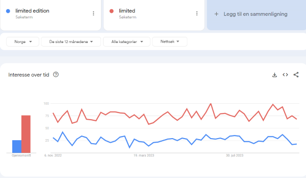
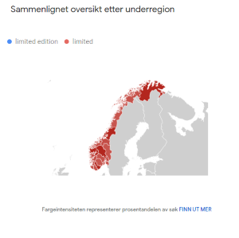

OBLIG DEL 2 ANALYSE AV SNEAKERS.NO
¤ Nøkkelord
> Hvilke søkeord velger jeg til min nettbutikk?
Når jeg velger søkeord til min nettbutikk ønsker jeg å velge ord som søkes på i hele landet men også ord på engelsk da ønsket er å selge produkter internasjonalt.
Videre ønsker jeg å gå for forskjellige søkeord til de forskjellige sidene på nettstedet mitt.
For at index.html skal dukke opp i google ønsker jeg ikke nødvendigvis bruke det mest populære søkeordet her og nå, men ord som
har hatt stabile søkertall over tid og jevnt over hele landet. Jeg ønsker at index.html skal dukke opp for en stor målgruppe og da er det hensiktsmessig
å bruke ord som en stor andel av befolkningen søker på. Disse ordene er selvfølgelig også nøye tenkt igjennom og til en viss grad unike for mitt nettsted.
Deretter vil jeg peile meg inn på søkeord som er mer spesifikke, trendy og nytenkende når det kommer til produkt.html og nyheter.html.
Her oppdateres det jevnlig med trendy innhold og det er aktuelt å bruke nøkkelord som treffer spesifikke ønsker her.
Under kommer noen av søkeordene som skal implimenteres, men det jobbes hele tiden mot riktig søkeordtetthet og ikke minst
riktig søkeord.
> Søkeordene
sneakers
Første søkeord som jeg ønsker å implimentere er "sneakers". Dette er hensiktismessig både fordi det er
det siden tilbyr men også fordi det er navnet på nettbutikken. Det er i og for seg unikt fordi det finnes ingen nettbutikk med dette navnet
og kan havne høyere opp på listen da selve nettstedet og URL til nettstedet heter sneakers. På bildene under har jeg sammenlignet med
sneakers 2023 for å se forskjellen på søkertallene og se hvilket som har best søkertall over tid. Sneakers blir søkt etter over hele landet og i mye større grad enn sneakers med årstall bak.
sko & nike
De to neste søkeordene "sko" og "nike" har også søkertall som tilsier at de er søkt på i stor grad over tid og jevnt
over hele landet. Søkeordet "sko" har mest trafikk men sammenligner man med "nike" ser man at dette kommer ikke
langt under på grafen. Det selges mye nike på siden og dette reflekteres allerede på forsiden.
limited
Videre peiler jeg meg inn på ord som er mer direkte rettet mot mine produkter. "limited" er med på listen blant søkeord.
Her har jeg sammenlignet ordet som er valgt med frasen "limited edition". Det viser seg at mange fler bruker ordet "limited" i sitt søk
og det brukes i de fleste delene av landet i motsetning til frasen som mangler søkere i Nord Trøndelag og Oppland. Det samme gjelder de som søker i utlandet.


tiktok & instagram
Tik tok og instagram blir også med på listen. Noe av heensikten med siden er at kunder i målgruppen skal kunne kjøpe
sko de har sett på både tiktok og instagram, gå rett inn på siden og finne sitt produkt. I videre utvikling av nettstedet ønskes det å implimentere slides
med innhold fra influensere fra både tik tok og instagram. Instagram leder fortsatt i antall søkertall men den
neste genrasjonen bruker mer TikTok og derfor implimenteres begge. Begge søkes etter i de fleste områder i landet og store deler av verden.
¤ Dokumentasjon av SEO og UU analyse
> SEO
Index.html
Desktop
Mobile
SEO analysen for index.html viser at det mangler både meta descriptions og at linkene på siden ikke er crawlable på verken desktop eller mobil.
Spesifikt for mobil er noe av font størrelsen ikke legible som betyr
at den ikke er så lett å lese. Det er kun 34.6% som anses som lett å lese. Tap targets må også endre størrelse noen steder.
produkt.html
Desktop
Mobile
Det samme også her på produktsiden. Meta desprictions og linker som ikke er crawlable.
Også her trengs det å gjøres noe med fontstørrelse men litt mer av innholdet er lett å lese enn på index.
nyheter.html
Desktop
Mobile

Også det samme med meta description og linker her på nyheter.html. Men en ting som dukker opp her som ikke har dukket opp før er
at det er en warning på meta name hvor det står feil gramatikk i koden som gjør at det kommer opp en warning. Dette må endres på for bedre SEO.
På mobile henger det samme igjen fordi det er samme html dokument men også her som tidligere er font størrelse og tap targets noe å gjøre bedre for bedre SEO. Bare 13.15% av teksten
er lett å lese her.
> UU
Index.html
På UU analse for index kommer det opp ting som er relativt enkle å gjøre noe med som feks kontrast eller headings. Jeg har også plassert kilder i alt tekst så det kommer opp long alternative text og kan plassere denne et annet sted.
Tomme linker og en missing form label er det også her.
produkt.html
Mye av det samme går igjen her også. Kontrast, tomme linker, lang alt tekst. Nytt for produkt.html er at det kommer opp alert på veldig liten tekst og at jeg har en overflødig link som linker til stedet vi allerede er på.
nyheter.html
Missing form, tomme linker, lav kontrast og lang alt tekst. Også her ønskes det mer headings for bedre UU.
¤ ChatGPT
>ChatGPT analyse av HTML-koden

>ChatGPT analyse av CSS-kode
¤ Sammenligning av analyser
| ChatGPT |
Lighthouse |
Webaim UU |
| Manglende meta tags |
Mangler meta description |
Tomme linker |
| Mangler alt tekst |
Linker som ikke er crawlable |
Manglende form label |
| Mangler headings |
Font størrelse mobil |
Lav kontrast |
| Duplisert innhold |
Tap targets |
Lang alt tekst |
| Skriverfeil i meta name |
Warning skrivefeil i meta name |
Mulighet for heading |
| Kontrastproblemer |
Veldig liten tekst |
| Mangler skjermtastaturstøtte |
Overflødig link |
| Mangler ARIA-attributter |
| Skrivefeil og grammatikk, legger til label "form" og sjekker gramatikk i koden. |
¤ Forbedrende tiltak for SEO og UU
- til meta descriptions og meta tags
- Forandrer alt tekst slik at den blir mer spesifik for skjermleser
- Bytter farger til farger med mer kontrast
- Endrer størrelse på tekst og tap targets
- Legger til ARIA-atributter
- Fjerner overflødig link, legger til form label og dobbeltsjekker skrifeil i kode.
>Meta descriptions og meta tags før & etter

Her har det blitt lagt inn manglende meta descriptions og meta tags for å optimalisere SEO.
>Alt tekst
I tilbakemeldingene fra analysen nevnes det at det behøves mer unik alt tekst. I koden har jeg endret slik at alt teksten på spesielt produktene er mer spesifik for bedre SEO men også for usability.
>Kontrastproblemer
Byttet til farger som lettere kan leses i header.
Brukt tydeligere farger med mer kontrast på tekst som er plassert på bilder. Fjernet mye ocapacity.
>Endrer fontstørrelser og størrelse på taptargets
>Legger til ARIA-atributter
ARIA-atributter blir lagt til for bedre støtte til skjermleser.
>Fjerner overflødig link, legger til form label og dobbeltsjekker skrifeil i kode.
¤ Lighthouse og webaim etter forbedringer.
Etter jeg har gjort forbedringer i både html kode og CSS kode kjører jeg de gjennom lighthouse og webaim igjen. Her får jeg mye bedre resultater. På SEO analyse på lighthouse blir de alle fleste grønne 100% bortsett fra index.html som får 99%.
Forandringene som er dokumentert over gjør at søkeroptimaliseringen blir mye mer optimal enn før. Det samme med webaim. Her forsvinner error og mye av warnings. Det kommer også opp at jeg har lagt til ARIA-labels. Webaim gir uttrykk for at sidene er mye er brukervennlig nå da jeg har forandret på f.eks kontraster, lagt inn ny headings og aria-labels.
¤OBLIG DEL 3 TILGJENGLIGHET PÅ SNEAKERS.NO
>Skjermleserkompatibilitet
Alle tre sidene blir testet med windows sin skjermleser.
Med en gang merker jeg at utfordringene her henger mye sammen med hva som har stått i de tidligere analysene, spesielt dette med headings.
Det blir vanskelig å navigere seg rundt på siden uten headings og innholdet blir ustrukturert. Jeg merker også at jeg trenger å markere bilder enda bedre med alt tekst slik at det er klart og tydelig hva det er bilde av.
Noe av innholdet blir ikke lest opp i det hele tatt som feks "NIKE 1099" som ligger under h1 på produkt.html.
Koblinger som feks handlekurv, favoritter og hamburgermeny må også tydliggjøres, og dette gjøres med aria-labels. I tillegg legger jeg merke til at skjermleser verktøyet kun leser opp innhold med handling, altså f.eks en link eller en knapp.
Etter aria-labels er lagt inn og noen små forandringer på koden blir gjort som å gjøre om innhold til innhold med handling gjør at det blir enklere for skjermleseren å lese opp.
>Tastaturnavigasjon
Både header og footer fungerer forholdsvis fint å navigere med kun tastatur. Med aria-labels i tillegg blir innholdet mer lesbart for skjermleseren.
Det viser seg at skjermoppleseren hopper over hovedinnholdet og går rett fra header til footer når det navigeres med kun tastene.
Dette blir bedre når man legger til skiplink. En annen ting som slår meg er at man kanskje bør bruke element for element istedenfor å samle flere produktfoto under en section for enklere navigering og opplesning.
Tasturnavigasjon blir også bedre og tydeligere med aria-labels og en bedre struktur i html koden.